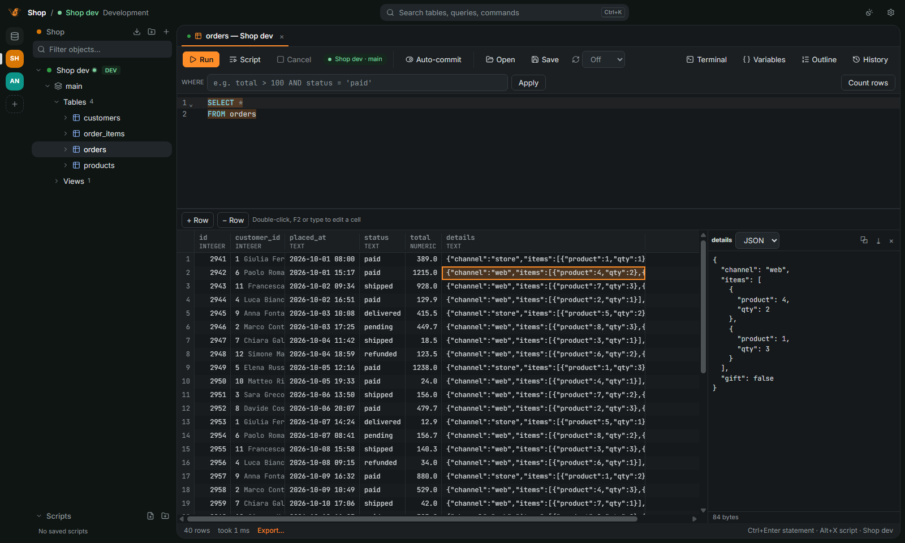

PlatypusDB
PlatypusDBSmall app.
Every database.
Open-source SQL client in Rust. Opens in half a second, scrolls millions of rows, talks to AI agents over MCP.
PlatypusDBOpen-source SQL client in Rust. Opens in half a second, scrolls millions of rows, talks to AI agents over MCP.
